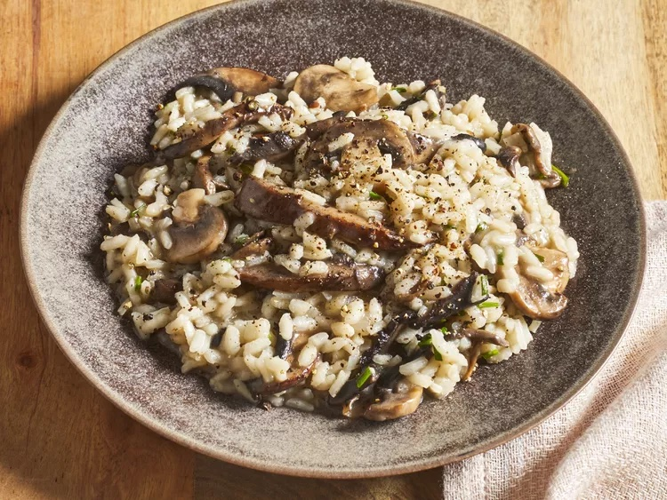

Risotto Recipe

Want another pic? all good homie!

Risotto at its best
This lemon asparagus risotto recipe is bright, flavorful, and perfect for springtime.
You must include:
- Vegetables
- Broth
- Wine
- Rice
- Good Vibes
How to make it:
- Steam the asparagus and cut into pieces.
- Cook the onion and celery until tender, season, and add garlic and rice.
- Cook and stir until rice is lightly toasted.
- Add the liquids gradually according to the detailed recipe below.